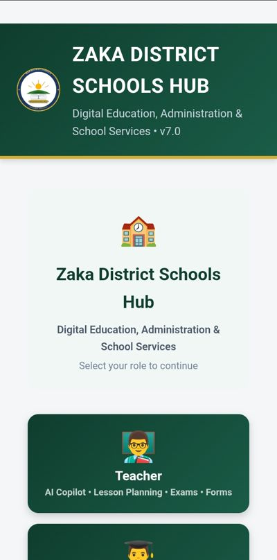
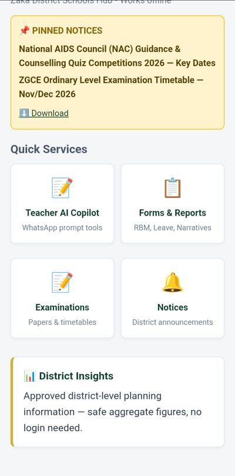
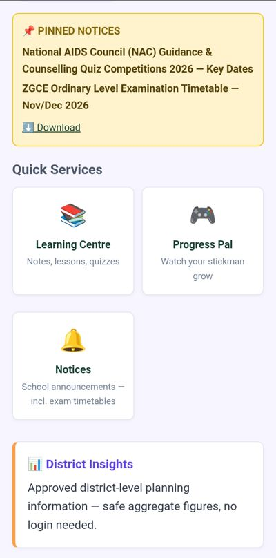
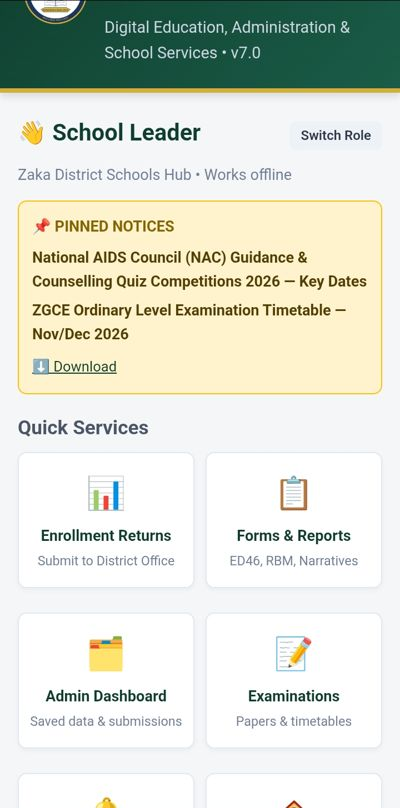
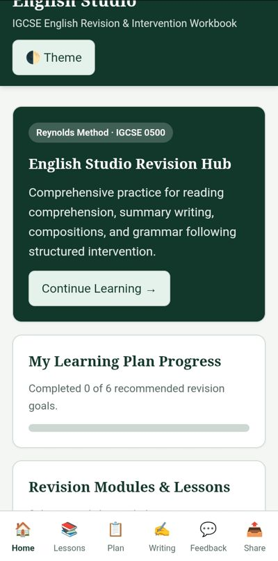
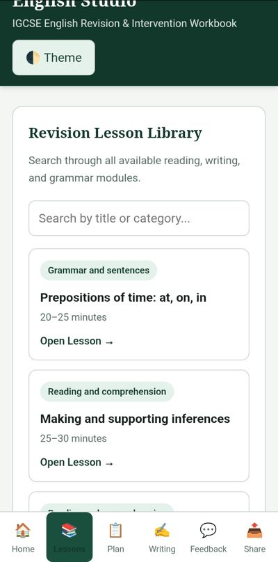
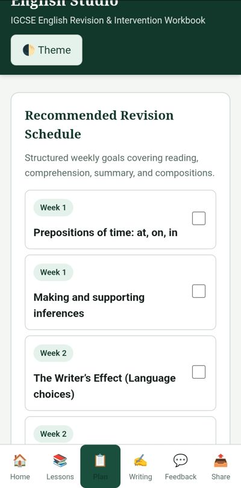
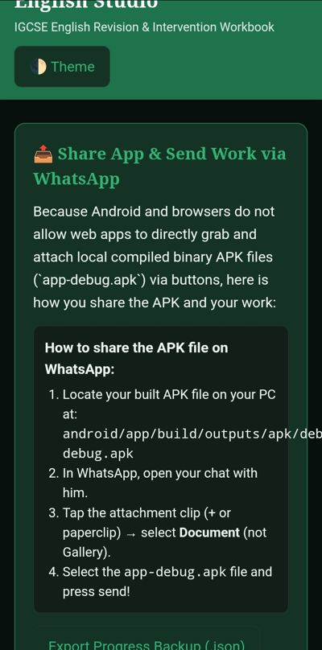

Learning to build practical digital tools for education
My coding journey is driven by a practical question: how can technology help teachers, learners and schools solve everyday problems?
I am developing my skills through education-focused projects, from school census data-entry concepts and English revision resources to a district schools platform and an Android application for a learner in my family.
I use AI-assisted development as part of my learning process, alongside defining requirements, reviewing outputs, making design decisions and identifying problems. My journey includes ideas, prototypes, revisions and unfinished work, not only completed applications. My earliest documented project discussions date to July 2026, although that is not necessarily when I first began learning to code.
Projects
Concept • July 2026
1. ED46 School Census Data-Entry Tool
Turning a school administration need into an application concept
One of my earliest documented projects explored an offline-first tool for completing school census information. The aim was to make data entry more organised, help users check totals and support report preparation.
The proposed application covered:
School profile information and ED46 sections A–K.
Enrolment, staffing, facilities and finance records.
Validation and checking of entries.
Locally saved drafts.
PDF and Excel report exports.
I explored Python, desktop packaging and beginner-friendly low-code alternatives. This was a concept and application-planning project; I am not presenting it as a completed application.
What this contributed to my journey
The project introduced me to translating an administrative process into application requirements: identifying inputs, organising forms, considering validation and planning useful outputs.
Planning • August 2026
2. ZIMSEC O-Level English Revision Project
Exploring structured practice and explanatory feedback
In August 2026, I explored an offline-first English revision application, initially focused on ZIMSEC O-Level Paper 2 practice.
The development plan included:
A question bank and short quizzes.
Explanations to help learners understand answers.
A small learner pilot.
A content-first approach before expanding the software.
Possible later Android packaging and offline resources.
A Google Forms pilot and a 20-question learning package were discussed. This project was planning and learning-content development, not a finished standalone application. It is separate from my later Cambridge-focused My English Lessons app.
What this contributed to my journey
This work helped me explore the relationship between educational content and application design: what learners practise, how feedback is presented and how an initial pilot could inform further development.
Prototype • September 2026
3. Zaka District Schools Hub
From teacher support to a broader education platform
The Zaka District Schools Hub began with an emphasis on helping teachers use AI and develop teaching resources. Its scope later expanded toward learner support and school administration.
The project involved AI-assisted HTML, CSS and JavaScript development. In September 2026, I had a running web/APK prototype. The full functionality of every proposed feature has not yet been verified.
Screenshots from the running prototype (v7.0):

Role selection

Teacher services

Learner services

School leader services
Teacher-support direction
Teacher Mode and subject resources.
Lesson-planning and scheme prompts.
English resources for Forms 1–4, followed by broader subject coverage.
RBM appraisal and Head/HOD narrative reports.
Notices, forms and locally saved records.
Learner lessons, quizzes and games
Lessons organised by subject and form.
Quizzes with explanatory feedback.
Locally saved practice scores.
Educational games.
A proposed Form 2 Mathematics starting pathway.
Short educational-video concepts.
These belong to the Hub’s development story rather than being separate completed applications. Full integration and a completed video library have not yet been achieved.
District-services direction
Teacher, learner and administrator entry points.
A school directory.
Enrolment reporting.
Examinations and results analysis.
Submission-status displays.
School affiliation and role verification.
This work raised important architecture questions. Saving a record on a phone is not the same as submitting it to a District Office, and selecting an administrator role does not establish a user’s identity. A working authenticated district-wide backend does not yet exist.
What this contributed to my journey
The Hub gave me experience defining an expanding product, revising interfaces and recognising the difference between a requested feature, generated code and demonstrated functionality. It also introduced practical questions about navigation, data quality, offline behaviour and permissions.
Android App
4. My English Lessons
An offline-capable Android app supporting Cambridge 0500 self-study
I created My English Lessons for a Form 2 learner in my family, to support his independent English study with a focus on Cambridge syllabus 0500. The application brings English lessons, study notes and personal learning records together on an Android device without requiring a constant internet connection.
Screenshots from the app on an Android phone:

Home and progress

Lesson library

Revision plan

Share and backup
Features
Lessons and study notes are available locally.
Learner entries, lesson updates and progress records persist between app sessions.
Learning data is stored on the device without requiring a cloud account.
Saved data can be exported as a file for backup or manual sharing.
Android’s native share menu allows an exported file to be passed to applications such as WhatsApp.
Technical structure
The application uses HTML, CSS and JavaScript, packaged for Android with Capacitor. Its project components include:
app: the Android application container, native configuration and bundled web assets.
capacitor-android: the runtime connecting the web interface with Android.
capacitor-filesystem: local file management for learning data and export files.
capacitor-share: access to Android’s native sharing flow.
Gradle configuration: build settings used by Android Studio to produce the APK.
What this contributed to my journey
This project extended my educational application work into Android development. It involved packaging a web interface for mobile use, managing persistent local data and connecting the interface to native file and sharing features. It also gave my work a specific learner and purpose: supporting someone in my family with independent study.
Current scope
The app supports Cambridge 0500 study. It is not an officially endorsed Cambridge product and does not claim complete syllabus coverage. File export is part of the current implementation; importing shared materials and restoring backups are not listed as features until they are built and tested.
Challenges That Have Shaped My Learning
Navigation and integration
During Hub updates, some Home and role-selection entry points disappeared while other features remained visible. The cause was not verified, but the issue taught me about revising an application without losing existing functionality.
Accuracy of educational and school information
I challenged incorrect school names and supplied a real school list. I also corrected subject terminology, including Textile Technology and Design. These experiences made accuracy part of the development process, rather than treating generated content as automatically correct.
Offline behaviour
My projects have repeatedly explored offline access, local storage and caching. I discussed service workers and cache updates for the Hub, but I have not shown that every proposed offline feature works reliably. That distinction matters when describing the project publicly.
Local records versus central reporting
I explored how locally saved information differs from records received by a central office. This became a significant design consideration as the Hub expanded from a device-based tool toward district services.
Identity and permissions
I questioned how an application would recognise a genuine administrator and distinguish school roles. Those discussions highlighted architecture needs beyond simply displaying different menus.
Managing an expanding scope
The Hub grew from teacher AI support into learning resources, reporting and district administration. It showed me why I need to distinguish the core prototype from proposed extensions and unfinished integrations.
Skills I Am Developing
My projects reflect a growing range of activities, rather than a claim that I have mastered every technology.
Area
Experience
Problem definition
Turning education and administration needs into application requirements
Educational content
Planning lessons, revision activities, quizzes and explanations
Interface design
Organising forms, navigation and role-based entry points
Web development
Iterating on AI-assisted HTML, CSS and JavaScript prototypes
Project review
Identifying incorrect information, missing screens and unverified features
Architecture awareness
Exploring offline access, storage, reporting and identity requirements
Android packaging
Capacitor, Android Studio, Gradle, local file persistence and native sharing
My Use of AI in Development
AI assistance is part of my coding journey. I use it to explore approaches, develop drafts, organise requirements and work through revisions.
My contribution includes identifying the problem, deciding what the application should do, supplying educational context, reviewing outputs, questioning inaccuracies and directing changes. My project history documents both AI-assisted prototyping and occasions when I challenged incorrect or unsupported outputs.
I want my portfolio to show this process honestly: what I attempted, what I changed, what I can demonstrate and what I am still learning.
Project Timeline
Period
Milestone
Stage
July 2026
ED46 school census tool
Concept and application structure
August 2026
ZIMSEC English revision project
Roadmap and pilot-content planning
September 2026
Zaka District Schools Hub
Prototype development; running web/APK prototype
September 2026
Hub learner lessons, quizzes and games
Content and extension planning
September 2026
District-services expansion
Interface development and architecture exploration
Later
My English Lessons Android app
Built for a Form 2 learner studying Cambridge 0500
Dates and stages come from my own project notes, not a complete repository or independently tested release history.
My Next Development Goals
Document each application with screenshots, source files and clear version history.
Test features individually and record the results.
Separate completed functionality from planned improvements.
Improve navigation and usability.
Confirm offline behaviour and backup workflows.
Strengthen my understanding of authentication and central data storage where projects require them.
Keep learner and staff information out of public demos.
My Direction
I am learning by building tools connected to real educational needs. My journey includes school administration concepts, revision resources, a district schools prototype and an Android study application for a family member.
The thread connecting these projects is my interest in making educational support more practical and accessible, and developing the skills to turn those ideas into reliable applications.